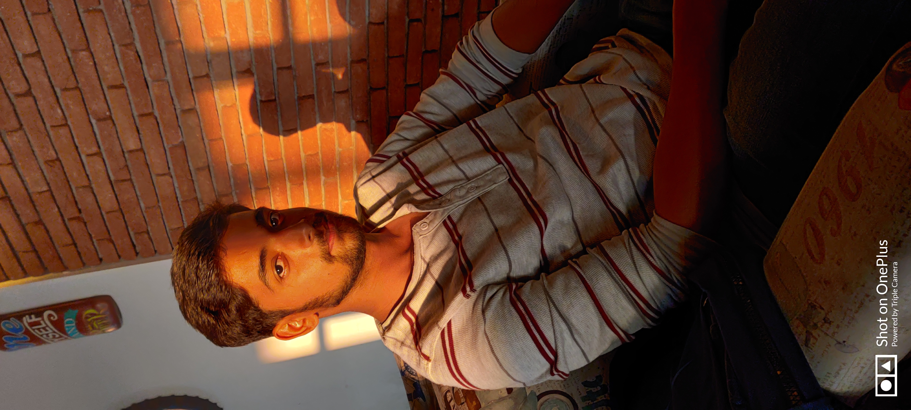

<!DOCTYPE html>
<html lang="en">
<head>
    <meta charset="UTF-8">
    <meta http-equiv="X-UA-Compatible" content="IE=edge">
    <meta name="viewport" content="width=device-width, initial-scale=1.0">
    <title>About Me</title>
    <!-- <link rel="icon" href="icon.png"> -->
    <link rel="stylesheet" href="https://cdn.jsdelivr.net/npm/bootstrap@4.5.3/dist/css/bootstrap.min.css" integrity="sha384-TX8t27EcRE3e/ihU7zmQxVncDAy5uIKz4rEkgIXeMed4M0jlfIDPvg6uqKI2xXr2" crossorigin="anonymous">
</head>
<style>
    *{
        justify-content: center;
     
    }
    .about{
        justify-content: center;
        text-align: center;
      
    }
    .thikthak{
        justify-content: center;
        text-align: center;
        margin-left: 500px;
        
    }
</style>
<body>
    
</body>
</html>
<div class="thikthak">
<div class="about">
    <div class="card" style="width: 20rem;">
        
        <div class="card-body">
          <h5 class="card-title">N Gautam Animesh</h5>
          <p class="card-text">I'm currently pursuing my B.tech in Computer Science from Vellore Institute of Technology, Bhopal
            Able. I am able to handle multiple tasks on a daily basis.
            Creative. I use a creative approach to problem solve.
            Dependable. I am a dependable person who is great at time management.
            I am a hardworking person always trying to learn the new things that are specifically related to software area.Currently I am trying to explore more in Javascript.I am making the new websites with pure Html and Css ; Html , Css and Javascript.Currently I am working on a new project that is
            MadeKhojo.My skills are Java, Python , MySql,NetBeans,Html ,Css,Javascript</p>
          
        </div>
      </div>
    </div>